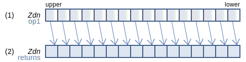
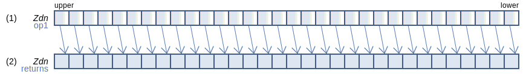
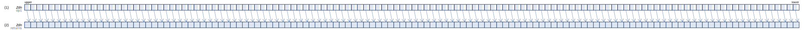

SVE Instruction List by Dougall Johnson
ASRD: Arithmetic shift right for divide by immediate (predicated)
ASRD Zdn.B, Pg/M, Zdn.B, #const (SVE (SME
svint8_t svasrd[_n_s8]_m(svbool_t pg, svint8_t op1, uint64_t imm2)
128-bit SVE
For each 8-bit signed integer set (2) to (1) >> const, if (1) is non-negative, or ( (1) + ( 1 << ( const − 1 ) ) >> const, if (1) is negative. This is the same as a regular shift, but rounding the result towards zero. The shift amount is limited to 1 ≤ const ≤ 8.
256-bit SVE
For each 8-bit signed integer set (2) to (1) >> const, if (1) is non-negative, or ( (1) + ( 1 << ( const − 1 ) ) >> const, if (1) is negative. This is the same as a regular shift, but rounding the result towards zero. The shift amount is limited to 1 ≤ const ≤ 8.
512-bit SVE
For each 8-bit signed integer set (2) to (1) >> const, if (1) is non-negative, or ( (1) + ( 1 << ( const − 1 ) ) >> const, if (1) is negative. This is the same as a regular shift, but rounding the result towards zero. The shift amount is limited to 1 ≤ const ≤ 8.
Larger sizes
1024-bit SVE
For each 8-bit signed integer set (2) to (1) >> const, if (1) is non-negative, or ( (1) + ( 1 << ( const − 1 ) ) >> const, if (1) is negative. This is the same as a regular shift, but rounding the result towards zero. The shift amount is limited to 1 ≤ const ≤ 8.
2048-bit SVE
For each 8-bit signed integer set (2) to (1) >> const, if (1) is non-negative, or ( (1) + ( 1 << ( const − 1 ) ) >> const, if (1) is negative. This is the same as a regular shift, but rounding the result towards zero. The shift amount is limited to 1 ≤ const ≤ 8.
Report mistakes or give feedback
Inspired by and based on the x86/x64 SIMD Instruction List by Daytime.